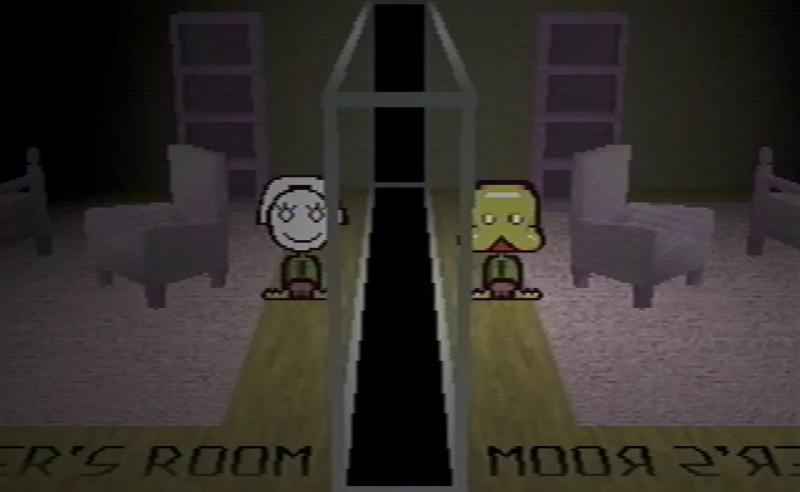

Petscop es una aclamada serie web de terror de 24 episodios presentada en formato de "Let's Play" (gameplay comentado) en YouTube. La serie, creada por Tony Domenico y publicada entre marzo de 2017 y septiembre de 2019, documenta a un protagonista, Paul, mientras explora un supuesto videojuego perdido e inacabado de PlayStation de 1997 con el mismo nombre.
La historia de Petscop es un ejemplo notable de narración moderna que utiliza el formato de vídeo de YouTube para contar una historia de terror inmersiva.
